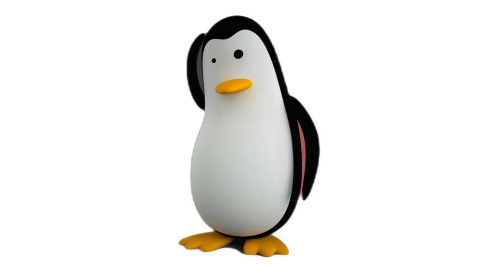

About me: Susan ctd Westfall, Ph.D.¶

How to connect¶
Profile Summary¶
- I am a ctd...
- But sometimes I am a penguin
- Truthfully, I am a ctd in the shape of a penguin
- PhD in stuff.
- Active research in other stuff
More details¶
I founded Fluent.ai and grew it, in my role as Founder and CTO, from zero to a well-known provider of speech recognition systemss. At Fluent.ai, we developed cutting-edge machine learning techniques for offline, on-device voice user interfaces targetted at tinyML, low-power embedded devices, smart-home devices, and wearables. We used a unique end-to-end spoken language understanding system. Unlike conventional speech recognition systems [speech --> text --> intent], these models do not require the intermediate text step and are able able to directly go from speech to intent, much like humans. Please see the website for more details.
Education¶
- Ph.D., Electrical and Computer Engineering, focused on Deep Learning and Speech Recognition McGill University, Montreal, Canada, 2015
- B.Tech., Dhirubhai Ambani Institute of Information and Communication Technology [DA-IICT], Gandhinagar, Gujarat, India, May 2008
Work Experience Summary¶
- Vestec Inc., Waterloo, ON, Canada | Research Scientist Consultant | May 2012 -- Dec 2012
- McGill University, Montreal, QC, Canada | Teaching Assistant and Lecturer | 2010 - 2013 [various]
- IIT Bombay, Mumbai India | Research Scholar | July 2008 - Dec 2010
Research Interests¶
- General Artificial Intelligence
- Reinforcement Learning
- Speech and language processing including acoustic modeling, NLU, etc.
- Machine learning for speech synthesis, deepfakes and other generative models Please refer to my recent publications for more details about my current area of work.
End to End SLU special session at ICASSP 2020¶
I am collaborating with three other researchers to organize End to End Spoken Language Understanding workshop at ICASSP 2020. Please see the link for more information.
Awards and Grants (from student life era)¶
- J. W. McConnell Memorial Fellowship, McGill University, 2012
- McGill Engineering Doctoral Award, 2011 - 2013
- Joseph S. Stauffer Fellowship, McGill University, 2011
- Sheryl & David Kerr Engineering Graduate Fellowship, McGill University, 2011
- McGill Engineering International Doctoral Award, 2011 - 2013
- JNTT TATA Scholar, 2009
- International Speech Communication Association Conference Grant, 2008
== Reviews etc. - IEEE Transactions on Image Processing - IEEE/ACM Transactions on Audio, Speech, and Language Processing - IEEE Signal Processing Letters - ISCA Interspeech Conferences - IEEE ICASSP Conferences - IEEE Symposium on Industrial Electronics and Applications - Elsevier Neurocomputing Journal - Elsevier Speech Communications Journal - MDPI Mathematical and Computational Applications - MDPI Entropy - MDPI Computers - MDPI Applied Sciences